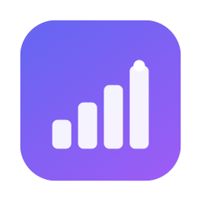
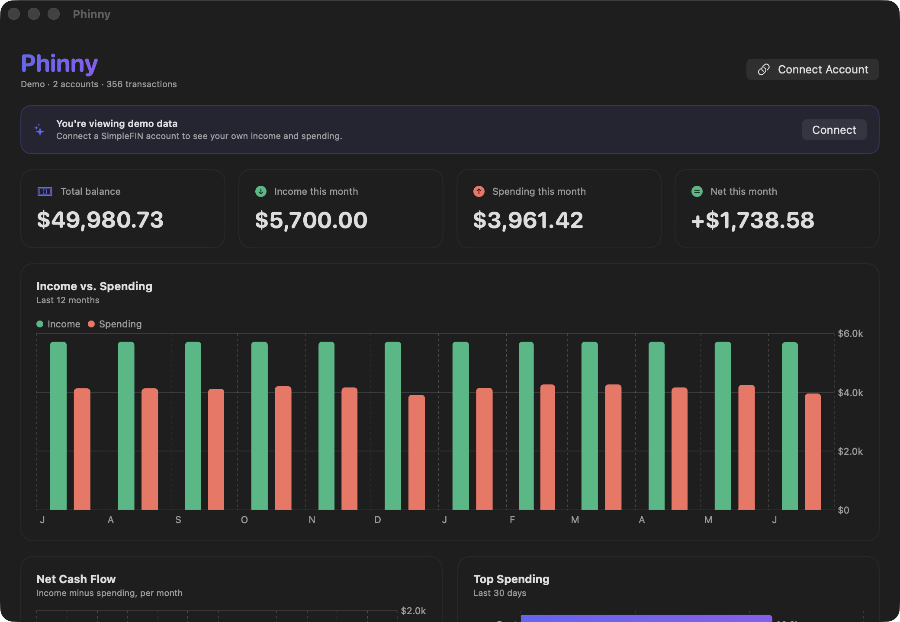

Phinny is an unofficial SimpleFIN viewer for macOS. It syncs your bank data and turns your income and spending into beautiful native charts, all stored privately on your Mac.

No spreadsheets, no manual imports, no accounts to create. Connect once and watch.
Income vs. spending, monthly net cash flow, and top spending - rendered with native Swift Charts.
Refreshes on launch when data is stale, carefully staying within SimpleFIN's daily request budget.
Data lives in a local SQLite file. Bank credentials live in your macOS Keychain. Nothing is uploaded.
SimpleFIN connects to thousands of institutions with read-only access - you stay in control.
A real SwiftUI app. No Electron, no browser, no background daemons.
A one-click demo loads sample data so you can explore the app instantly.
Three steps from download to dashboard.
At simplefin.org, connect your bank and create a one-time setup token.
Phinny exchanges it once and keeps only the read-only access URL - securely in your Keychain.
Your accounts and transactions sync into beautiful charts. Refresh anytime with ⌘R.
Phinny is local-first. You can open, back up, or delete everything yourself.
A plain SQLite database at ~/.phinny/phinny.sqlite.
Human-readable YAML at ~/.phinny/config.yaml.
The SimpleFIN access URL is encrypted in the macOS Keychain - never on disk.